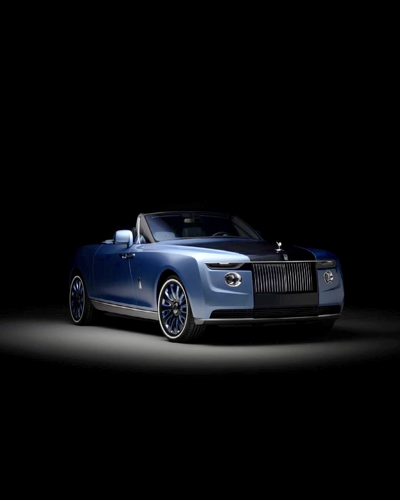

найдорожча машина в світі
Rolls-Royce Boat Tail

(її ціна 28 міліонів долларів!!!)
Хвіст човна Rolls-Royce— це ультра-ексклюзивний, створений на замовлення кабріолет, натхненний яхтами, який вважається одним з найдорожчих автомобілів у світі (близько $28 млн), з унікальним дизайном, "палубою" в задній частині, що включає набір для пікніка, холодильники, посуд від Christofle і навіть парасольку, а всього випущено три екземпляри.
ключові особливості:
- Ексклюзивність: Усього існує три екземпляри, кожен з яких унікальний і створений за індивідуальними побажаннями замовника.
- Дизайн "Палуби" (Boat Tail): Задня частина автомобіля відкривається як крила метелика, створюючи "палубу" для пікніка, з відсіками для шампанського, ікри, млинців та столових приладів.
- Розкішні деталі: Включає порцеляновий посуд, срібні прилади, два холодильники для напоїв і навіть годинник з перламутру в центрі панелі приладів, що збігаються з колекцією клієнта.
- Натхнення: Дизайн черпає натхнення в яхтах і J-класу початку XX століття, а колір одного з екземплярів створений за мотивами раковин перлин з колекції власника.
- Двигун: Оснащений 6.75-літровим V12 з подвійним турбонаддувом, потужністю близько 563 к.с.
- На будівництво одного автомобіля йде до чотирьох років ручної роботи і близько 1813 деталей.